اعضای گروه
- رومینا بابایی
- 402111259
- سیدمحمدمهدی موسوی
- 402111272
هر پنج بخش آزمایش در جلسهٔ آزمایشگاه انجام شد و نتیجهٔ هر بخش همانجا به دستیار آموزشی تحویل داده شد.
مبانی اندازهگیری
هدف و چیدمان آزمایش
در این آزمایش، نویز و خطیبودن گیرندهٔ ADALM-PLUTO با نوارسنجهای فلوگراف lab02_combined.grc بررسی شد. بسته به مرحله، فرستنده خاموش بود یا نویز گوسی، یک تن یا دو تن تولید میکرد. پاسخ فرکانسی مسیر آنتنبهآنتن نیز در آرایش جداگانه ثبت شد.
در اندازهگیریهای تزریقی، بین فرستنده و ورودی RX تضعیفگر ثابت قرار داشت. تضعیف فرستنده با توجه به حد مجاز در ورودی گیرنده تنظیم شد. در جاروب دوتن توان مجموع از جمع توان خطی دو تن به دست میآید. در آزمون پاسخ فرکانسی، آنتنها در دو سر لینک و با چیدمان ثابت بهکار رفتند.
فلوگراف توان نویز را در نوار به مرکز آفست گزارش میکند. چهار نوارسنج دو تن و دو محصول مرتبهٔ سوم را پایش میکنند. در مقیاس dBFS، صفر سطح تماممقیاس دیجیتال است. در تنظیم مرجع ، با دستورکار، این سطح معادل ارجاعشده به ورودی است.
مبنای محاسبات
توان بهازای هر تن و نسبت نویز اضافی از مدل اسمی فرستنده با تلفات مسیر به دست میآیند. مقدار برحسب دسیبل وارد میشود. فرمول عدد نویز به روش نسبت نویز بر پایهٔ تفاضل قرائتهای همان نوار است.
برای جاروب توان، روند خروجی با تغییر تضعیف مبنای سنجش خطیبودن است. مختصات توان ورودی و ستون بهرهٔ جدولها به مدل اسمی توان و کالیبراسیون مرجع وابستهاند. نتیجهٔ قله و پهنای باند پاسخ فرکانسی از توان نسبی ثبتشده در رابط برنامه خوانده شد.
بخش ۱ · نویز گیرنده و روش مستقیم
صفحهٔ بخشروش اندازهگیری
درگاه RX گیرنده باز بود و خروجی فلوگراف lab02_combined در حالت Off (zeros) قرار داشت. فرکانس مرکزی بر اساس تنظیم پیشفرض فلوگراف در نظر گرفته شد. در هر یک از سه تنظیم بهره، مقدار نوارسنج توان نویز بهعنوان برحسب dBFS ثبت شد. شکلهای ۱ تا ۳ خواندن نوارسنج و طیف خروجی را در هر تنظیم نشان میدهند.
محاسبهٔ عدد نویز به روش مستقیم
مقیاس dBFS سطح را نسبت به تماممقیاس دیجیتال بیان میکند. ضریب توان نویز خواندهشده را به ورودی گیرنده ارجاع میدهد. در دمای مرجع و پهنای باند معادل نویز ، داریم
در بهرهٔ ، با دادهشده در دستورکار،
در دو بهرهٔ دیگر، برای برآورد جدول، تغییر ضریب تبدیل را برابر تغییر بهرهٔ تنظیمشده در نظر گرفتیم.
| کمیت | |||
|---|---|---|---|
| توان نویز با درگاه باز، (dBFS) | |||
| ضریب تبدیل، (dB) | |||
| توان نویز ارجاعشده به ورودی، (dBm) | |||
| عدد نویز به روش مستقیم، (dB) |
مقادیر ستارهدار به فرض تغییر یکبهیک با بهره وابستهاند. برای تعیین مستقل آنها، در هر بهره باید را با یک تن ضعیف با توان ورودی معلوم به دست آورد. باز بودن ورودی نیز بهدلیل عدم تطبیق و امکان دریافت نویز محیط، دقت برآورد مستقیم را محدود میکند.
پاسخ پرسش بخش اول
روش مستقیم به چه کمیتهایی نیاز دارد که روش Y-Factor به آنها نیاز ندارد؟
روش مستقیم به کالیبراسیون مطلق در بهره و فرکانس کار و مقدار عددی برای محاسبهٔ توان مرجع نیاز دارد. در روش Y-Factor، ضریب تبدیل و پهنای باند مشترک در نسبت توان نویز دو حالت روشن و خاموش حذف میشوند. عدد نویز از این نسبت و ENR مؤثر در ورودی گیرنده محاسبه میشود. دمای مرجع در تعریف ENR منظور شده است.
طیف خروجی و خواندن نوارسنج
در هر سه طیف، خط باریکی در آفست صفر دیده میشود. نوارسنج نویز حول آفست قرار دارد و بازهٔ اسمی آن از تا است. قلهٔ صفر و افزایش کف در لبههای طیف، خارج از این بازهاند. توان نویز از نوارسنج باندی در پایین هر تصویر خوانده شد.


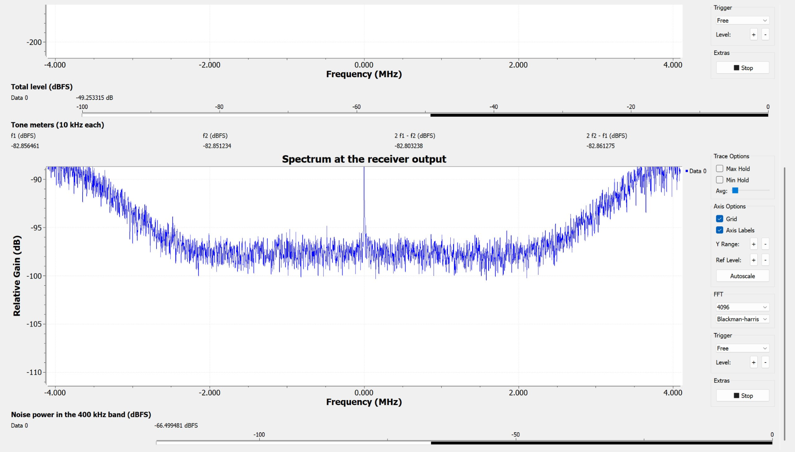

ثبت اجرای مراحل
با ورودی باز و منبع خاموش، توان نوار نویز در بهرههای ، و خوانده شد. در شکلهای طیف، خط آفست صفر و افزایش کف نزدیک کنارهها بیرون از نوار محاسبهٔ نویز قرار دارند.
مقیاس dBFS با مرجع تماممقیاس و ضریب تبدیل دستورکار تفسیر شد. برای بهرهٔ مرجع، به ارجاعشده به ورودی متناظر است.
توان نویز ورودی، نویز حرارتی نوار و عدد نویز مستقیم محاسبه و در جدول کالیبراسیون ثبت شدند.
بخش ۲ · عدد نویز به روش Y-Factor
صفحهٔ بخشروش اندازهگیری
فرستنده از طریق تضعیفگر ثابت به ورودی گیرنده متصل شد. در فلوگراف lab02_combined، حالتهای Off (zeros) و Gaussian noise بهترتیب برای ثبت و به کار رفتند. هر دو کمیت از نوارسنج توان نویز در باند با مرکز در باند پایه خوانده میشوند. فرکانس مرکزی بر اساس پیشفرض فلوگراف درج شده است.
رابطهٔ محاسبه و تضعیف فرستنده
با برحسب dBFS، توان نسبی است. اختلاف دو خواندن و عدد نویز بهصورت زیر محاسبه میشوند.
مدل اسمی دستورکار، با احتساب تضعیفگر مسیر، را میدهد. در نتیجه معادل و معادل از ENR اسمی در ورودی گیرنده است.
| شکل | بهرهٔ RX (dB) | حالت منبع | (dB) | (dBFS) | Total level (dBFS) |
|---|---|---|---|---|---|
| ۱ | خاموش | ||||
| ۲ | گوسی | ||||
| ۳ | گوسی | ||||
| ۴ | خاموش | ||||
| ۵ | گوسی | ||||
| ۶ | خاموش | ||||
| ۷ | گوسی |
ستاره در جدول ۱ یعنی تضعیف فرستنده برای آن تصویر مشخص نشده است. عدد خواندن لحظهای پنل پایین تصویر است. سه خواندن جداگانهٔ هر حالت برای محاسبهٔ میانگین و پراکندگی در مستندات موجود ثبت نشدهاند. برای شکل ۷، نوسان زیاد خواندن هنگام آزمایش گزارش شد.
با دسترسی به خواندنهای تکراری، توانهای خطی هر حالت میانگینگیری میشوند و سپس محاسبه میشود.
محاسبه با یادداشت تیم
برای شکلهای ۱ و ۲، سطوح تقریبی و با کف نمایش طیف سازگارند. از این دو مقدار و به دست میآید. با ENR اسمی ، جایگذاری این نسبت در رابطه، میدهد. این برآورد به تأیید نسبت با خواندنهای پایدار همان باند وابسته است.
جدول عدد نویز و بررسی اعتبار
برای نمونه، خواندنهای شکلهای ۱ و ۲ نسبت میدهند. جدول ۲ سه زوج روشن و خاموش را در قالب دستورکار ثبت میکند. ترتیب هر سهتایی (ENR, , ) و واحد همهٔ مقادیر دسیبل است.
| فرکانس مرکزی | |||
|---|---|---|---|
| فرکانس دوم | خواندنهای این فرکانس در دسترس نیست | ||
| فرکانس سوم | خواندنهای این فرکانس در دسترس نیست | ||
مقادیر ستارهدار جدول ۲ با محاسبه شدهاند. اگر تضعیف در باقی مانده باشد، ENR اسمی و مقادیر در بهرههای و بهترتیب و میشوند.
هر سه مقدار حاصل از نوارسنج از بازهٔ تا دستورکار بیروناند. در مدل گیرنده با ، کران برقرار است. این کران در تضعیفهای ۶۰ و ۵۷ بهترتیب معادل و برای است. مقادیر منفی جدول ۲ حاصل جایگذاری مستقیم دادهها و نشانهٔ ناسازگاری با مدل اسمیاند. عدد نویز معتبر از این خواندنها تعیین نمیشود. سطح کل هر چهار ثبت گوسی زیر بود. نزدیکترین خواندن به حد دستورکار، در شکل ۵ است.
آزمون خطیبودن با گام
در بهرهٔ ، تضعیف فرستنده از ۶۰ به کاهش یافت. با استفاده از شکل ۱ بهعنوان خط پایهٔ مشترک، سهم نویز خاموش را در مقیاس خطی کم میکنیم.
افزایش ثبتشده از مقدار مورد انتظار بیشتر است. در شکل ۳، نوارسنج باند بالاتر از سطح کل است. دو نوارسنج در فلوگراف هموارسازی مستقل دارند و برای مقایسهٔ کمی باید هر دو خواندن در وضعیت پایدار ثبت شوند. تیم هنگام آزمایش نشانهای از اشباع مشاهده نکرد. صحت کمی گام با فریمهای موجود نامعین است.
پاسخ پرسش بخش دوم
چرا باید در یک بازهٔ میانی بماند و اثر خطای در خواندن چقدر است؟
وقتی به ۱ نزدیک است، جملهٔ کوچک میشود و خطای خواندن در عدد نویز تقویت میشود. برای بزرگ، بالا بردن توان نویز تزریقی میتواند گیرنده یا مبدل را وارد تراکم کند و رابطهٔ خطی را برهم بزند. سازگاری یک نسبت بزرگ با ENR اسمی از کران بالا سنجیده میشود.
برای کوچکترین نسبت جدول ۲، یعنی ، خطای در یکی از خواندنها بهطور صوری حدود خطا در میدهد. در یادداشت تیم، این اثر حدود است.
تصاویر بهرهٔ

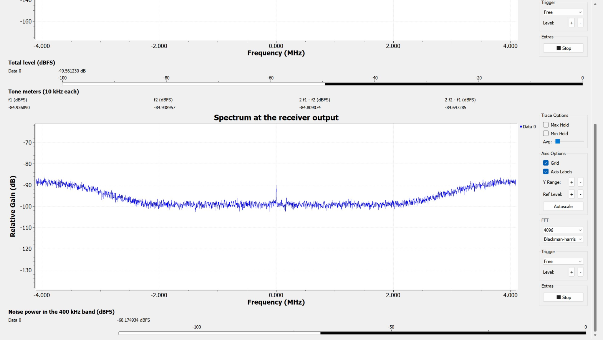

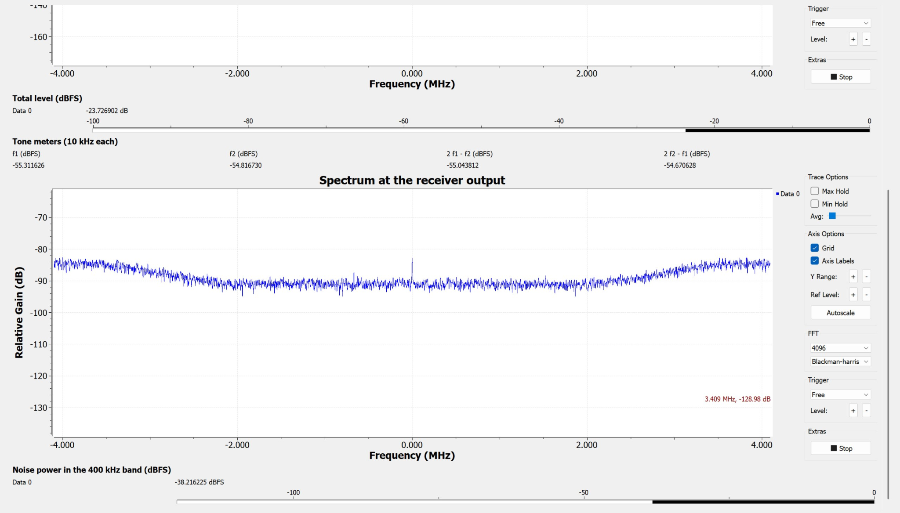

تصاویر بهرهٔ


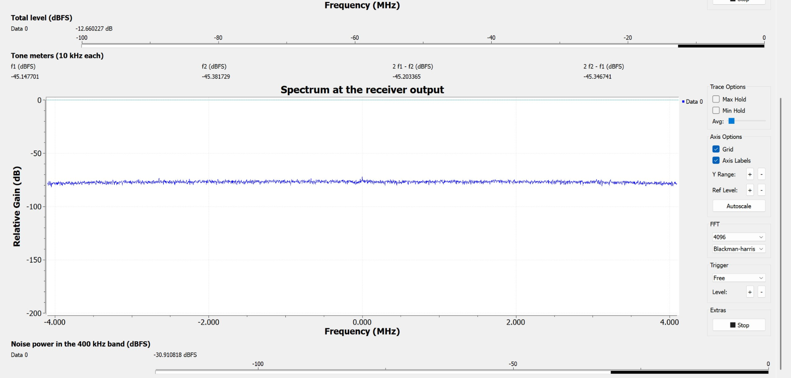
تصاویر بهرهٔ


ثبت اجرای مراحل
نویز گوسی فرستنده از مسیر تضعیفگر به گیرنده رسید. ENR اسمی برای تضعیفهای و محاسبه شد.
توان نویز در وضعیتهای خاموش و روشن خوانده شد. جدول قرائتها اعداد باقیمانده از هفت ثبت را نشان میدهد. روش تجمیع سه قرائت هر حالت، میانگینگیری توان خطی پیش از گرفتن نسبت است.
معیار بازهٔ تا برای و حد سطح کل بررسی شد. یادداشت تیم تغییر حدود در کف نمایش طیف را ثبت کرده است و سطح کل چهار تصویر گوسی زیر حد دستورکار است.
برای آزمون پاسخ خطی، تضعیف کم شد. پس از کسر توان زمینه در مقیاس خطی، رشد خواندهشده از تصاویر به دست آمد و محدودیت این مقایسه در متن توضیح داده شد.
برای سه بهره، جدول Y-Factor از زوجهای ثبتشده تشکیل شد. تنظیم مرجع فرکانس در گزارش است و خانههای بدون مستند عددی با وضعیت داده مشخصاند.
بخش ۳ · جاروب تکتن و تراکم
صفحهٔ بخشروش اندازهگیری
فرستنده از طریق تضعیفگر ثابت به گیرنده وصل شد. بهرهٔ RF گیرنده روی و فرکانس مرکزی فلوگراف lab02_combined روی قرار داشت. ابتدا حالت Off (zeros) برای خواندن کف نویز نوار دهکیلوهرتزی ثبت شد. سپس حالت One tone یک تن با آفست ساخت که در این تنظیم معادل در RF است.
تضعیف TX از تا با گام کاهش یافت و یک قرائت دیگر در ثبت شد. در هر گام، سطح تن اصلی از نوارسنج و سطح کل از پنل Total level خوانده شد.
تبدیل توان ورودی و محاسبهٔ بهره
با دامنهٔ دیجیتال و تلفات مسیر شامل تضعیفگر و کابل، رابطهٔ (۲) دستورکار بهصورت زیر به کار رفت.
تبدیل به dBFS از مرجع بخش اول در همین تنظیم بهره استفاده میکند. ستونهای توان ورودی و بهره برآوردهای وابسته به این مرجع و مدل اسمی توان فرستندهاند.
| (dB) | (dBm) | (dBFS) | (dBFS) | (dB) | (dBFS) |
|---|---|---|---|---|---|
جدول ۵ هر نه نقطهٔ اندازهگیریشده را دارد و با دامنهای که دستیار آموزشی تعیین کرد کامل است. ردیف در برگهٔ ثبت و نمودار آمده است. برای محافظت از دستگاه، تضعیف پس از این نقطه کمتر نشد.
فرکانس از کادر تنظیمات شکل ۳ و نسخهٔ ارسالی جدول خوانده شد. یکی از رونویسیهای یادداشت جلسه مقدار را دارد و رقمهای فرکانس در دستنویس همپوشانی دارند.
| شکل | ||||||
|---|---|---|---|---|---|---|
| ۲ | ||||||
| ۳ | ||||||
| ۴ |
نمودار جدول ۵

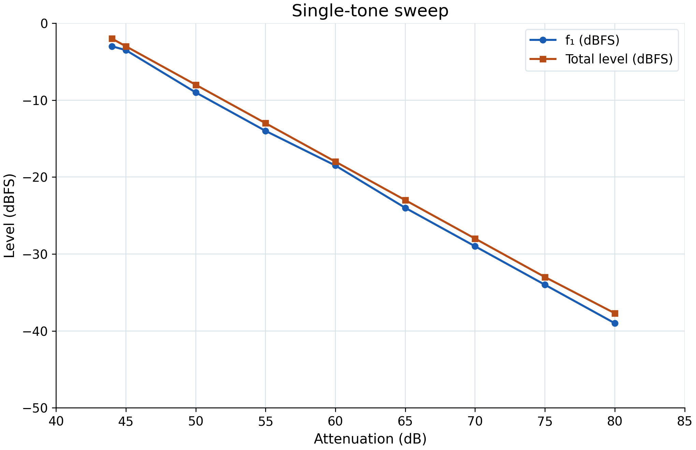
بررسی تراکم یکدسیبل
چهار نقطهٔ نخست در تضعیفهای ۸۰ تا بهرهٔ سیگنالکوچک را در مرجع جدول میدهند. خط سیگنالکوچک برحسب تضعیف و میزان افت توان نسبت به آن از روابط زیر به دست میآیند.
شرط تراکم یکدسیبل است. در همهٔ نقاط اندازهگیریشده، بین و بود. در گام پایانی، کاهش تضعیف از ۴۵ به سطح تن را نیم دسیبل بالا برد و خروجی به مقدار روی خط سیگنالکوچک رسید. بنابراین تا بیشترین ورودی آزمودهشده، معادل اسمی یا ، مشاهده نشد.
پاسخ پرسش ۳
بهدلیل مشاهده نشدن تراکم یکدسیبل، سطح خروجی در نقطهٔ تراکم تعیین نشد. در آخرین گام، سطح تن اصلی و سطح کل بود. اگر افت بهره همزمان با رسیدن نمونهها به تماممقیاس و برش آنها رخ دهد، محدودیت مبدل محتمل است. وقوع افت بهره در سطحی بهمراتب پایینتر میتواند نشانهٔ محدودیت طبقههای آنالوگ باشد. دادههای این جاروب برای تعیین عامل محدودکننده کافی نیستند.
مشاهدات طیف گیرنده
در شکل ۴ تن اصلی بالاتر از کفِ همان نوار در شکل ۲ است. چند خط ضعیف دیگر نیز در طیف گیرنده دیده میشوند. خواندن نوارسنجهای ، و در حوالی کف حالت خاموش باقی مانده است. آستانهٔ ظهور محصولات ناخواسته به ثبت طیف در گامهای مختلف نیاز دارد و با این تصاویر تعیین نشد.
خواندنهای لحظهای شکلهای ۳ و ۴ با ثبت دفتر در گام اختلاف دارند. همچنین Total level در شکل ۴ حدود پایینتر از خواندن نوار تن است. تحلیل تراکم و نمودار بر ثبتهای جاروب در جدول ۵ تکیه دارند.
تصاویر فلوگراف و گیرنده

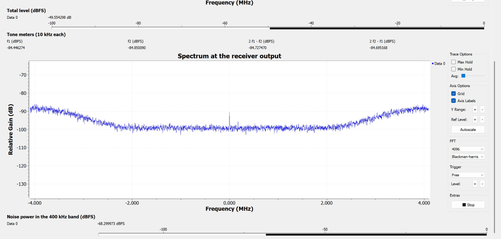

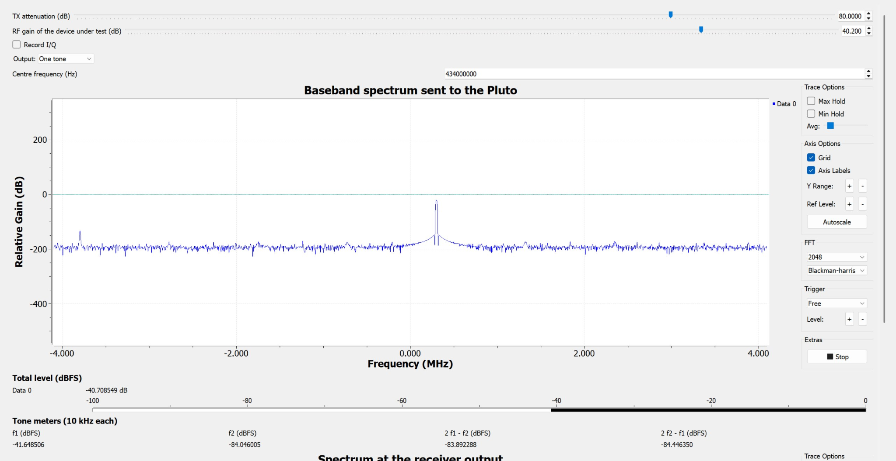

ثبت اجرای مراحل
گیرنده در بهرهٔ تنظیم شد و پس از ثبت کف نوار ، تن در آفست به آن اعمال شد.
جاروب با گامهای و یک گام پایانی انجام شد. نوارسنج ، سطح کل و تصاویر طیف برای ارزیابی خطهای ناخواسته بررسی شدند.
قویترین ورودی آزمودهشده طبق مدل بود و حد ورودی رعایت شد.
بهرهٔ هر گام و خط سیگنالکوچک محاسبه شدند. نتیجهٔ جاروب، رسیدن به سطح برای تن اصلی در آخرین نقطه با افت کمتر از یک دسیبل است.
بخش ۴ · جاروب دوتن و محصولات IM3
صفحهٔ بخشروش انجام آزمایش
فرستنده از طریق تضعیفگر ثابت به ورودی گیرنده وصل شد. در فلوگراف lab02_combined بهرهٔ گیرنده روی تنظیم شد. در آغاز، خروجی در حالت Off (zeros) و Record I/Q خاموش بود. کف دو نوار دهکیلوهرتزی محصولات مرتبهٔ سوم از نوارسنجها خوانده شد. کف و بهترتیب و بود (شکل ۲).
دو تن همدامنه با آفستهای و نسبت به اعمال شدند. فاصلهٔ دو تن بود و نوارسنجهای محصولات و در آفستهای و قرار داشتند. با ثابت نگهداشتن بهرهٔ گیرنده، تضعیف فرستنده از تا در گامهای کم شد. در هر گام، چهار نوارسنج و سطح کل خروجی ثبت شدند.
توان ورودی هر تن و فاصلهٔ آن تا محصول
در مدل اسمی رابطهٔ (۲) دستورکار، دامنهٔ دیجیتال هر تن و افت مسیر در عبارت ثابت منظور شده است. توان ورودی هر تن با مرجع تبدیل برای بهرهٔ از روابط زیر به دست آمد.
اگر سطح دو تن و سطح دو محصول در خروجی باشند، فاصلهها را در دسیبل چنین تعریف کردیم.
| تضعیف فرستنده (dB) | |||||||
|---|---|---|---|---|---|---|---|
| توان ورودی اسمی هر تن (dBm) | |||||||
| توان ورودی اسمی هر تن (dBFS) | |||||||
| (dBFS) | |||||||
| (dBFS) | |||||||
| (dBFS) | |||||||
| (dBFS) | |||||||
| سطح کل خروجی (dBFS) | |||||||
| (dB) | |||||||
| (dB) | |||||||
| (dB) | |||||||
| شیب اندازهگیریشده برای برونیابی معتبر کافی نیست | |||||||
هر هفت نقطهٔ جدول ۶ در محدودهٔ تعیینشده توسط دستیار آموزشی ثبت شدند. در گام آغازین اختلاف دو تن بود و معیار دستورکار را برآورده کرد. در گامهای و ، اختلاف بهترتیب و بود. در قویترین گام، توان ورودی اسمی مجموع دو تن با افزودن به توان هر تن، به دست آمد.
نمودار جدول ۶

معیار آشکارسازی و محاسبهٔ شیب
در ، هر دو محصول در جدول ۶ حدود بودند. این نخستین نقطهٔ ثبتشده با محصول قابلتشخیص است. دو محصول بهترتیب و بالاتر از کف نوارهای خود بودند. بنابراین در نخستین توان ورودی اسمی، یعنی یا برای هر تن، معیار دستورکار برقرار بود. آستانهٔ دقیق ظهور در ورودیهای ضعیفتر از آغاز جاروب تعیین نشد.
هر هفت نقطه شرط فاصله از کف را داشتند و در برازش خطی کمترین مربعات استفاده شدند. متغیر افقی برازش ، افزایش توان ورودی هر تن نسبت به گام نخست است. بنابراین با کاهش تضعیف، و توان ورودی افزایش مییابند.
| خواندن خروجی | ||||
|---|---|---|---|---|
| شیب (dB/dB) |
طبق برازش، با افزایش ورودی، دو محصول حدود و رشد کردند. پاسخ مکعبی در ناحیهٔ سیگنال کوچک برای همین گام حدود رشد پیشبینی میکند.
پاسخ پرسش ۴
شیب هر دو محصول نزدیک یک بود و در بازهٔ تا باقی ماند. این روند با یک مؤلفهٔ مزاحم که همراه تنهای اصلی تقریباً خطی تغییر میکند، سازگار است. رابطهٔ از برونیابی تن با شیب یک و محصول با شیب سه به دست میآید. چون شیب دوم در دادهها برقرار نبود، مقدار گیرنده از این جاروب قابل تعیین نیست.
آزمون منبع با کاهش بهرهٔ گیرنده
در تضعیف ثابت ، بهرهٔ گیرنده از به کاهش یافت.
| بهرهٔ گیرنده (dB) | سطح کل (dBFS) | (dB) | ||||
|---|---|---|---|---|---|---|
برحسب dBFS هستند. میانگین دسیبلی تنها از به و میانگین دو محصول از به رسید. افت مطلق تنها و محصولات بهترتیب و بود و فاصلهٔ فقط تغییر کرد. اگر کاهش بهرهٔ در ورودی یک طبقهٔ مکعبی رخ دهد، انتظار میرود محصول آن طبقه حدود افت کند و فاصلهاش از تن حدود بیشتر شود. افت تقریباً یکسان مشاهدهشده با حضور محصولات پیش از مرحلهای که بهرهٔ آن تغییر کرده، سازگار است. فرستنده یکی از مکانهای محتمل تولید این محصولات است و آزمون محل دقیق تولید را مشخص نمیکند.
پاسخ پرسش ۵
در مدل فشاری با و ، دامنهٔ مؤلفهٔ مکعبیِ هر محصول دوتن است. برونیابی آن در به دامنهٔ مؤلفهٔ خطی میرسد. در آزمایش تکتن، افت وقتی رخ میدهد که سهم مکعبی از دامنهٔ خطی به کسر برسد. پس اختلاف نظری دو توان ورودی در این مدل برابر است با
در دادههای آزمایش، شرط برونیابی برقرار نبود و نقطهٔ تراکم تکتن هم تعیین نشد. اختلاف تجربی این دو کمیت قابل محاسبه نیست. با توان یکسان برای هر تن، دامنهٔ قلهٔ دو تن در لحظهٔ همفازی تا میرسد، یعنی بالاتر از قلهٔ تکتن با دامنهٔ . به همین دلیل ورودی دوتنی در توان پایینتری برای هر تن به حد دامنهٔ قابلتحمل مدار یا مبدل میرسد.
خواندن نوارسنجها در تصاویر
| شکل | سطح کل | |||||
|---|---|---|---|---|---|---|
| ۲ | ||||||
| ۳ | ||||||
| ۴ |
همهٔ خواندنها برحسب dBFS هستند. قرائتهای لحظهای شکلهای ۳ و ۴ با برخی مقادیر ثبتشده در جدول ۶ اختلاف دارند. برازش شیب و آزمون منبع بر دادههای ثبتشده در اکسل تکیه دارند.
تصاویر طیف گیرنده

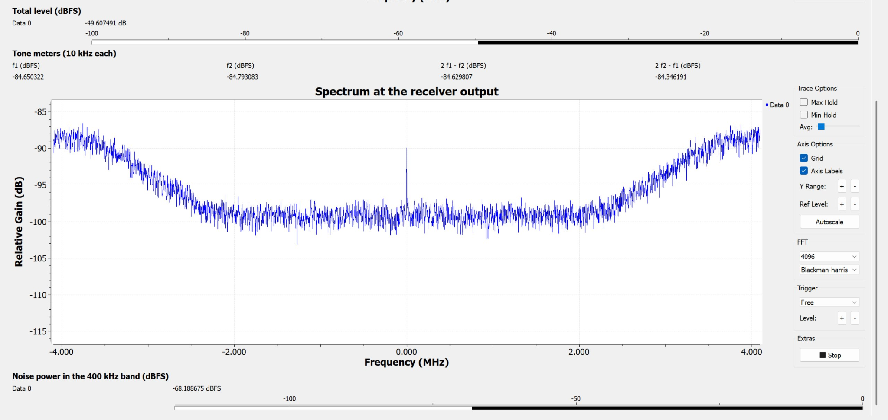


ثبت اجرای مراحل
دو تن با فاصلهٔ اعمال شدند و همسطحیِ آغاز جاروب با اختلاف بررسی شد. سطح آغاز و پایان با تضعیف واقعی ثبت شدند، چون جاروب تکتن به نقطهٔ تراکم نرسید.
چهار نوارسنج و سطح کل در هفت گام ثبت شدند. تصاویر حالت خاموش و تضعیفهای و همراه جدول دادهها آمدهاند.
هر دو محصول در هفت گام بیش از بالاتر از کف خود بودند. شیبها با برازش توان محصول بر افزایش توان هر تن محاسبه شدند.
اولین ورودی ثبتشده با محصولات آشکار برای هر تن بود. گزارش از معیار شیب برای قضاوت دربارهٔ اعتبار تقاطع استفاده میکند.
در تضعیف ثابت ، بهرهٔ گیرنده کم شد و تغییر تنها، محصولات و فاصلهٔ آنها محاسبه شد.
بخش ۵ · پاسخ فرکانسی لینک
صفحهٔ بخشروش انجام آزمایش
آنتنها به درگاههای فرستنده و گیرنده متصل شدند و چیدمان آنها در طول جاروب ثابت ماند.
برنامهٔ lab02_antenna_response_gui.py در محیط RadioConda اجرا شد. با انتخاب Start automatic sweep، فرکانس واقعی تن بهصورت خودکار از تا تغییر کرد و توان دریافتی تن در هر فرکانس ثبت شد.
برنامه برای تولید تن از آفست در باند پایه استفاده میکند و فرکانس نوسانساز را متناسب با فرکانس آزمون تغییر میدهد. در هر گام، پس از برای پایدارشدن، میانگین توان نمونههای مختلط فیلترشده در پنجرهٔ محاسبه میشود. نرمافزار توان را با به دسیبل نسبی تبدیل میکند و در صورت تکرار خواندن در یک فرکانس، بیشترین خواندن را در حالت Max Hold نگه میدارد.
| تنظیم یا کمیت ثبتشده | مقدار |
|---|---|
| بازهٔ جاروب RF | |
| گام جاروب | |
| تضعیف فرستنده | |
| بهرهٔ دستی گیرنده | |
| تعداد فرکانسهای ثبتشده |

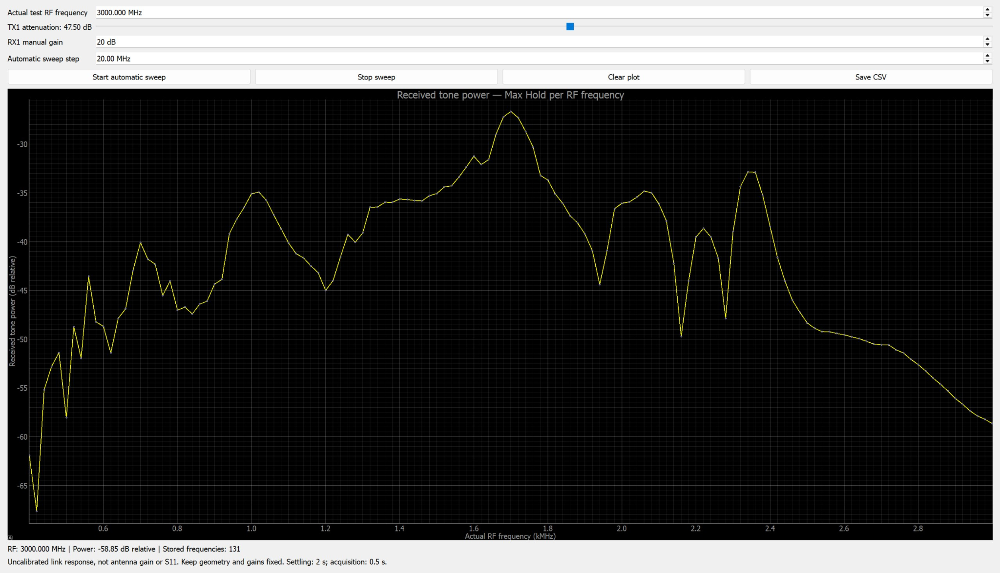
جاروب تا کامل انجام شد. تعداد در نوار وضعیت با فرکانسِ شامل هر دو سر بازه سازگار است.
فرکانسهای قطع و پهنای باند سهدسیبل
قلهٔ اصلی در دیده شد و توان آن حدود نسبی بود. اگر سطح دریافتی برحسب دسیبل نسبی باشد، تراز قطع برابر است با
در این تراز، نسبت توان دریافتی به توان قله است. برای پهنای باند پیرامون قلهٔ اصلی، نخستین تقاطع در هر طرف قله انتخاب شد. تقاطع چپ میان و و تقاطع راست میان و قرار گرفت. فرکانس هر تقاطع با درونیابی خطی بین دو نقطهٔ مجاور روی نمودار برآورد شد.
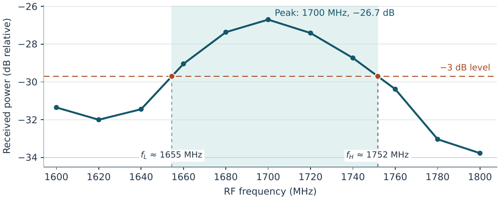
| کمیت | مقدار تقریبی (MHz) |
|---|---|
| فرکانس قطع پایین | |
| فرکانس قطع بالا | |
| پهنای باند سهدسیبل |
تفسیر پاسخ اندازهگیریشده
توان دریافتی با پاسخ آنتنهای فرستنده و گیرنده، انتشار بین آنها و پاسخ سختافزار تغییر میکند. در مقیاس دسیبل، سهم دو آنتن با هم جمع میشود. اگر دو آنتن پاسخ یکسان داشته باشند و اثر وابسته به فرکانسِ مسیر و سختافزار جبران شود، پاسخ نسبی هر آنتن نصف سهم جمعی آنهاست. در آن حالت، افت برای یک آنتن با افت در سهم جمعی دو آنتن متناظر است.
عدد از افت منحنی دریافتشده بهدست آمد. دقت آن به گام ، درونیابی میان دو نقطهٔ مجاور و وضوح تصویر بستگی دارد.
منبع روش و قالب جدول، دستورکار آزمایش ۲، بخش ۵، صفحهٔ ۸.
ثبت اجرای مراحل
آنتنها به دو درگاه فرستنده و گیرنده وصل شدند. همترازی و موقعیت آنها در طول جاروب ثابت ماند.
برنامهٔ پاسخ فرکانسی در محیط RadioConda اجرا شد. جاروب از تا با گام انجام شد و فرکانس ثبت گردید.
قله در و تراز نسبی خوانده شد. از تقاطعهای دو سوی قله با تراز ، و و سپس پهنای باند به دست آمدند.
پاسخ پرسشهای دستورکار
تحلیل یکپارچهٔ نتایج
مقایسهٔ مستقیم با روش نسبت نویز
در فرکانس مرکزی و بهرهٔ ، روش مستقیم عدد نویز را با فرض و برآورد میکند. در همان بهره، یادداشت جلسه از تغییر حدود کف نمایش طیف حکایت دارد. با ، این مقدار بهطور مشروط میدهد. فاصلهٔ این دو برآورد است.
قرائت نوارسنج توان همان آزمایش، میدهد. اگر و مدل اسمی منبع برقرار باشد، حداکثر است. مقدار حاصل جایگذاری صوری در فرمول است و نشانهٔ ناسازگاری داده و مدل است. اگر مقدار مستقیم را بهعنوان فرض مدل در این بهره بهکار ببریم، مورد انتظار حدود خواهد بود.
درگاه باز در اندازهگیری مستقیم، توان اسمی و تلفات مسیر در تزریق نویز، و تفاوت قرائت کف طیف با توان انتگرالگیریشدهٔ نوارسنج در این اختلاف مؤثرند. اختلاف بین توان نوار و سطح کل در شکل ۳ بخش دوم، بررسی همزمانی و سازگاری قرائتها را نیز ضروری میکند. برای دو فرکانس دیگر و تکرارهای مستقل، فایلهای حاضر مقدار عددی قابل رونویسی ندارند.
منحنی مشترک خروجی بر حسب ورودی
محور افقی نمودار، توان ورودی اسمی هر تن از رابطهٔ است. نقاط تکتن از جدول ۵ گزارش و نقاط دوتن از جدول ۶ آمدهاند. خروجیِ تکتن در گام پایانی بود و افت نسبت به خط سیگنالکوچک حداکثر شد. شرط افت تا بیشترین ورودی آزمودهشده، ، برقرار نشد. گام از ثبت تکمیلی و نمودار تکتن به مجموعهٔ هشتردیفی برگهٔ اکسل افزوده شده است.

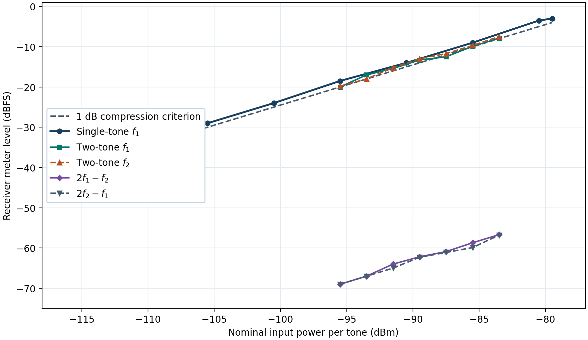
در دوتن، محصولات در اولین گام برای هر تن از معیار آشکارسازی گذشتند. شیبهای و و تغییر تنها در فاصلهٔ تن تا محصول در آزمون کاهش بهره، با سهمی از اعوجاج پیش از طبقهٔ بهرهٔ تغییریافته سازگارند. نقطهٔ تقاطع معتبر از این شیبها به دست نمیآید. حد ایمنی ورودی برای قویترین تکتن و قویترین مجموع دو تن، بهترتیب با و فاصله در مدل اسمی رعایت شده است.
بهره، حساسیت و گسترهٔ دینامیکی
با استفاده از سه برآورد مستقیم، در پهنای باند و برای حداقل نسبت سیگنال به نویز ، آستانهٔ ورودی به صورت محاسبه شد. مقادیر بهرههای و بر فرض تغییر یکبهیک با بهره تکیه دارند.
| بهرهٔ تنظیمی (dB) | (dB) | (dBm) | (dBm) |
|---|---|---|---|

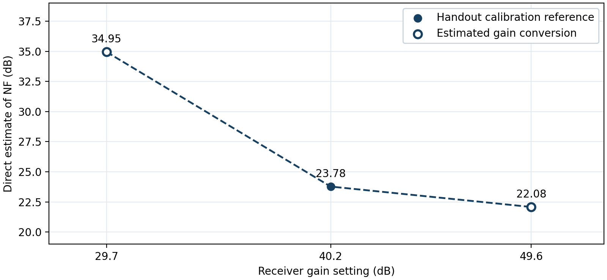
پاسخ پرسش گسترشی. افزایش بهره از به آستانهٔ برآوردی را پایین آورد. با افزایش بیشتر بهره، بهبود تنها بود، یعنی حدود به ازای هر دسیبل بهره. همزمان، با افزایش بهره برای یک ورودی ثابت، دامنهٔ دیجیتال بیشتر میشود و حاشیهٔ تحمل یک مزاحم قوی میتواند کاهش یابد. این مصالحه توضیح میدهد که افزایش بهره در حضور مزاحم لزوماً حساسیت مؤثر را بهتر نمیکند.
برای بهرهٔ و نوار ، کف نویز حرارتی ارجاعشده به ورودی در مدل مستقیم حدود است. فاصلهٔ آن تا قویترین ورودی تکتن آزمودهشده است. محاسبهٔ گسترهٔ دینامیکی محدود به محصولات مرتبهٔ سوم به معتبر در هر بهره نیاز دارد.
در این دادهها، نقطهٔ تراکم و تقاطع معتبر برای رسم برحسب بهره تعیین نشدند و اعداد تیمهای دیگر در پروندهٔ گزارش موجود نیستند. بیشترین بهرهٔ آزمودهشده در سناریوی صرفاً محدود به نویز، کمترین کف برآوردی را دارد. انتخاب نقطهٔ کار در حضور مزاحم به دادهٔ خطیبودن در همان بهره نیاز دارد.
پیشبینی در برابر اندازهگیری
خطا در جدول زیر برای تغییر سطح یا شیب، برابر است که مقدار مشاهده و پیشبینی است. اختلاف در واحد اصلی هم گزارش شده تا درصد روی تغییرات دسیبلی بیش از اندازه تفسیر نشود.
| آزمون | پیشبینی | مشاهده | خطای نسبی |
|---|---|---|---|
| افزایش نویز تزریقی با گام تضعیف (dB) | |||
| رشد تکتن از گام تا (dB) | |||
| رشد تکتن در آخرین گام (dB) | |||
| شیب (dB/dB) | |||
| شیب (dB/dB) | |||
| تعداد نقاط جاروب فرکانسی |
خطای گام نویز از فریمهای لحظهای حاصل شد. اختلاف توان باند و سطح کل در ثبت تضعیف نشان میدهد که پایداری و مرجع مشترک نوارسنجها باید برای قضاوت کمی بررسی شوند.
آخرین افزایش تکتن کمتر از گام اسمی بود؛ چون نقطهٔ قبلی بالاتر از خط مرجع بود، خروجی آخر روی خط سیگنالکوچک قرار گرفت. بنابراین این گام بهتنهایی اندازهٔ تراکم را تعیین نمیکند.
اختلاف شیب محصولات با عدد سه بهترتیب و است. آزمون منبع نشان داد پس از کاهش بهره، تنها و محصولات تقریباً به یک اندازه افت کردند. این رفتار با فرض محصول غالبِ مکعبی پس از محل تغییر بهره ناسازگار است.
در برآورد پهنای باند ، گام و خواندن تقریبی تصویر، دقت فرکانسهای قطع را محدود میکنند. اندازهگیری کامل فرکانس، شمار نقاط را تأیید میکند.
منابع و مبنای ثبت
روابط، آرایش و معیارهای پذیرش از دستورکار «عدد نویز و پارامترهای RF»، آزمایش ۲ آزمایشگاه رادیوی نرمافزار، گرفته شدهاند. دادههای اندازهگیری از گزارشهای پنج بخش، ثبتهای جدولهای ۵ و ۶ و تصاویر فلوگراف و جاروب فرکانسی گروه آمدهاند.